Trigonometric Identities
Introduction
Trigonometric Identities are a set of equalities that contain trigonometric functions and are always true in every trigonometric equation.
Sine, Cosine, and Tangent
Sine, Cosine and Tangent are the three main functions in trigonometry, they also have their own formulas when it comes to the sides of triangles.
Sine (sin)
In trigonometry, sine (shortened to sin) has one formula that remains the same…
The sine of a given angle is the opposite side over the hypotenuse. For example, if this triangle's opposite side is 3 and the Hypotenuse is 5, sin(θ) equals 3/5.
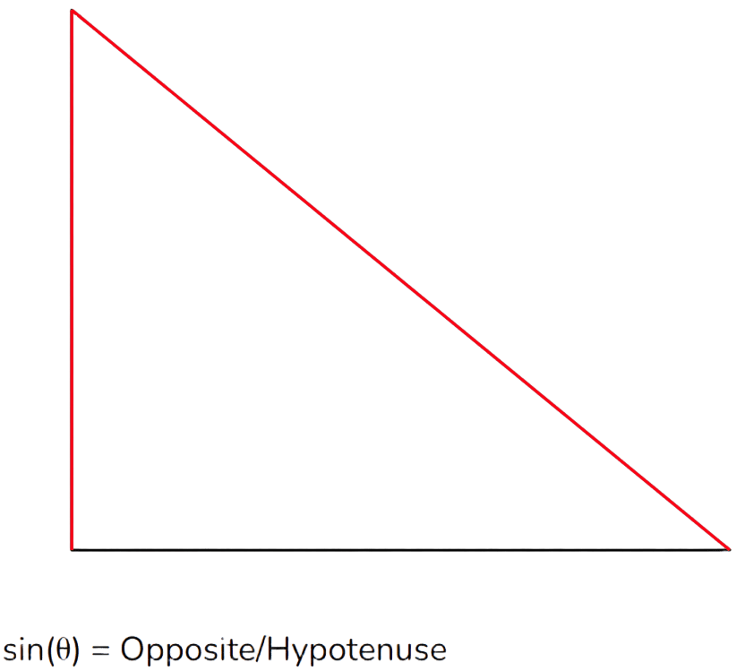
Cosine (cos)
In trigonometry, Cosine (shortened to Cos) has one formula that remains the same…
The cosine of a given angle is the adjacent side over the hypotenuse side. For example, if the adjacent side is 8 and the hypotenuse is 12, then sin(θ) equals 8/12.

Tangent (tan)
In trigonometry, Tangent (shortened to Tan) has a few formulas that remain the same…
 The tangent of a given angle is the opposite side over the adjacent side. For example if the triangle's opposite side is 9 and the adjacent is 13, then tan(θ) equals 9/13. Tangent also has other formulas that are equal to each other…
The tangent of a given angle is the opposite side over the adjacent side. For example if the triangle's opposite side is 9 and the adjacent is 13, then tan(θ) equals 9/13. Tangent also has other formulas that are equal to each other…
Coscant, Secant, Cotangent
Coscant, Secant and Cotangent are three trigonometry functions that are reciprocals to the main three trigonometric functions.
Coscant (Csc)
In trigonometry, cosecant (shortened to Csc) is the reciprocal of sine…
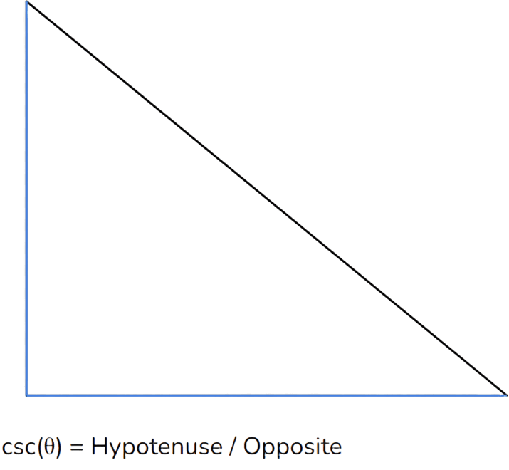
The cosecant of a given angle is the hypotenuse side over the opposite side. For example, if sin(θ) is 24/18, then cosecant would be 18/24. Cosecant can also be 1 over sin(θ) and sin can also be 1 over csc(θ)...
Secant (Sec)
In trigonometry, Secant (shortened to sec) is the reciprocal of cosine…
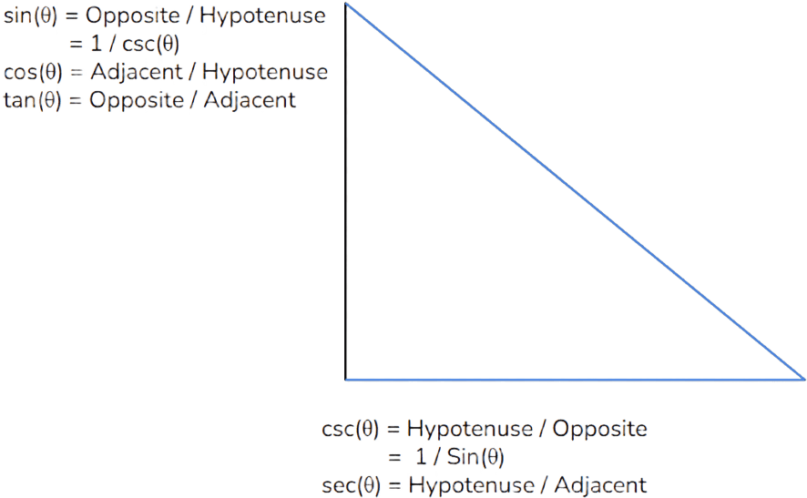
The secant of a given angle is the hypotenuse side over the adjacent side. For example, if the cosine of a given angle is 16/20, the-
n the secant of that angle is 20/16. And same for cosecant, secant and cosine can have other formulas…
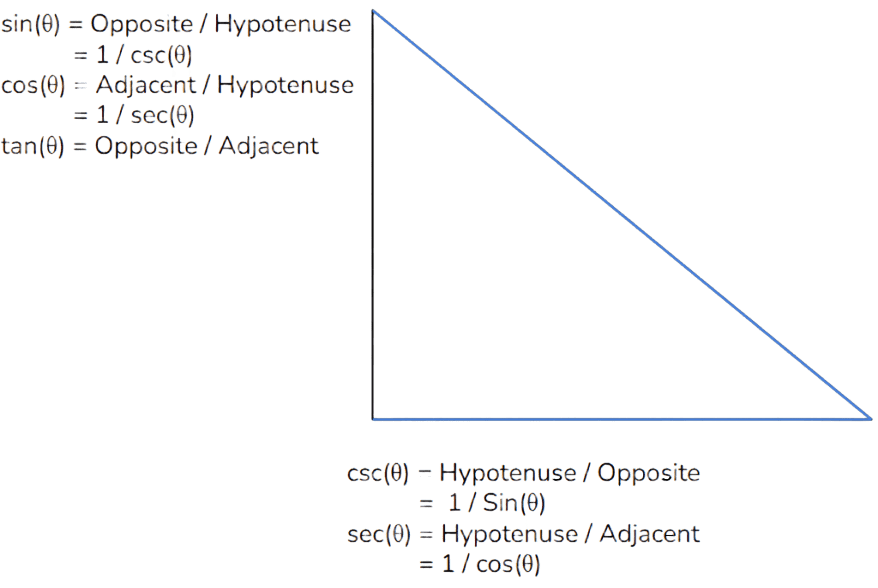
Cotangent (cot)
Cotangent (shortened to cot) is the reciprocal of tangent hence its name…
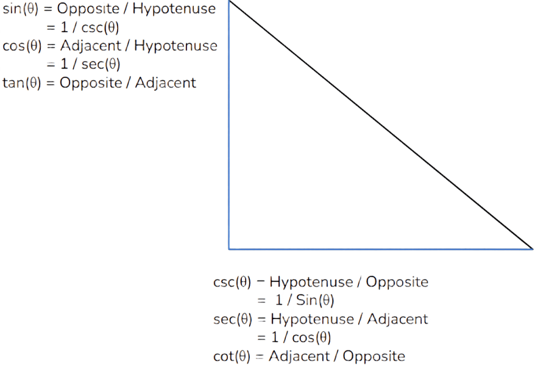
The cotangent of a given angle is the adjacent side over the opposite side. For example, if the tangent of an angle is 12/22, then the cotangent is 22/12. Also cotangent has other formulas equivalent to each other…
Pythagoreans/Sqaured Identities
The Pythagorean Identities (or called Pythagoras Identities) is a fundamental formula in all of mathematics itself, it is used to find the length of the hypotenuse in a right triangle…
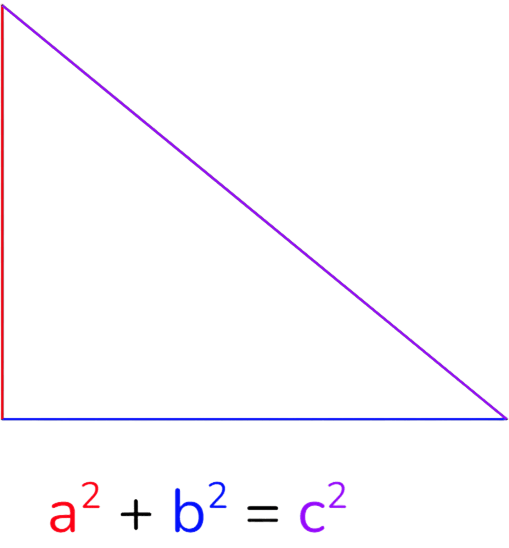
In trigonometry, we can use this formula for trig functions. For example, we can divide every term by c2…
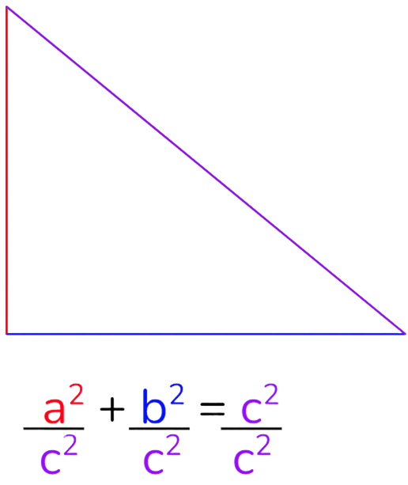
And if we divide all the terms by c2 we end up with a2/c2 + b2/c2 = 1…
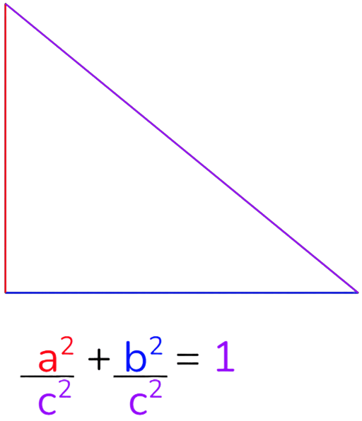
And this leads into the first pythagoras theorem as a2/c2 can equal (a/c)2 which can be (opposite / hypotenuse)2 which can turn into sin2…
This brings us to one of the Pythagoras Identities, where cos2(θ) + sin2(θ) equals 1 since a2 + b2 = 1…
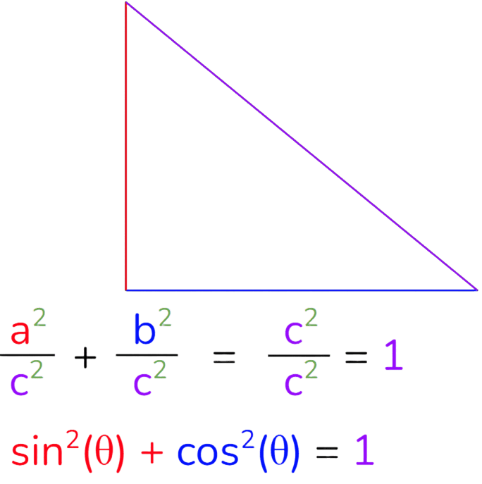
There’s two other identities that are related to this identity with sin2(θ) + cos2(θ) = 1. There’s a relation between secant and tan…
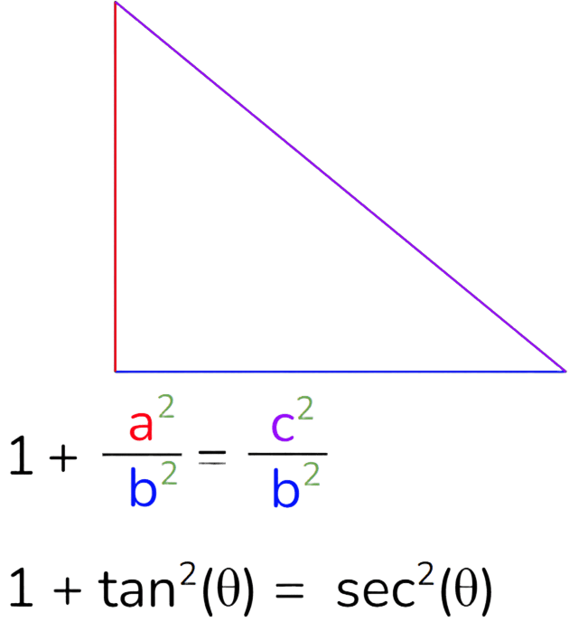
This identity can be proved by the formula that we covered earlier…
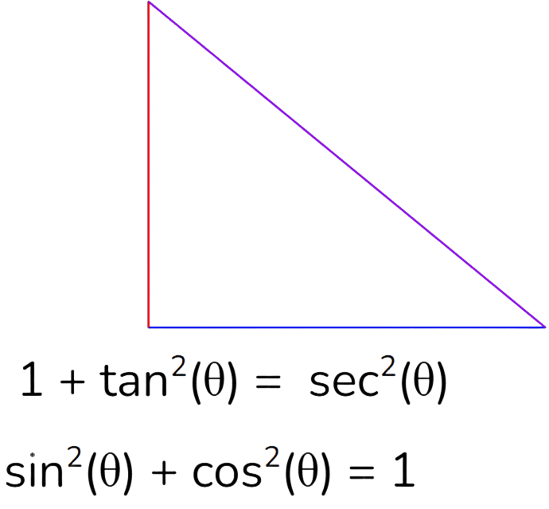
We first divide every term by cos2(θ)...
cos2(θ) divided by itself is 1, sin2(θ) divided by cos2(θ) can be rewritten as tan2(θ) since tan can equal sin(θ) over cos(θ), and 1 over cos2(θ) can be rewritten as sec2(θ) since secant is the reciprocal of cosine...
You can also divide every term by sin2(θ) to get a different trig identity…
There are also other identities by moving some terms around…
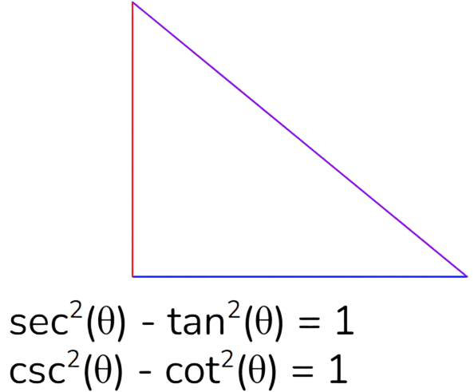
These trigonometry identities are commonly referred to as "squared trigonometry identities” and these are fundamental in trigonometry.
Done? Here are other Links
Back to Main Page
Back to Informational